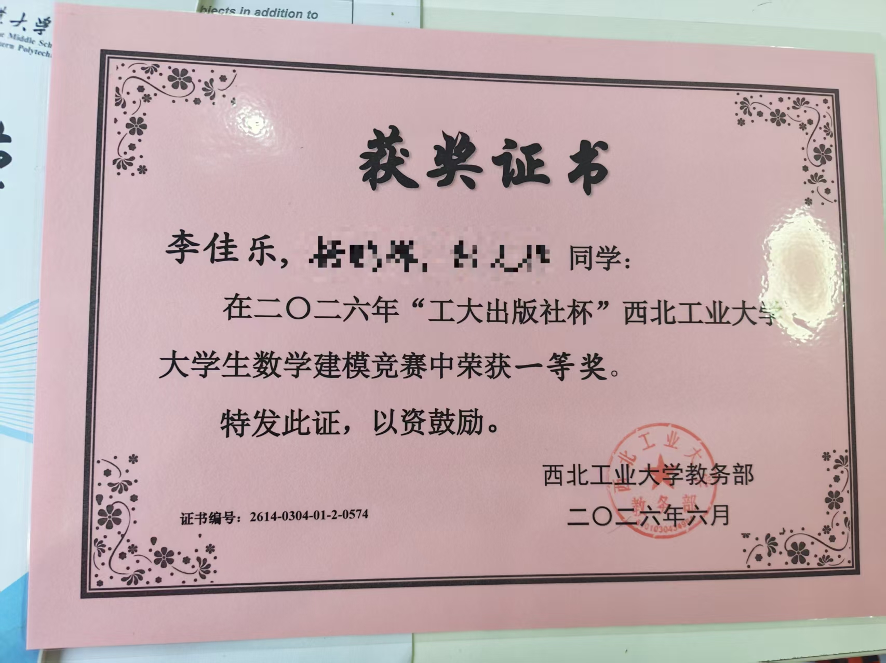
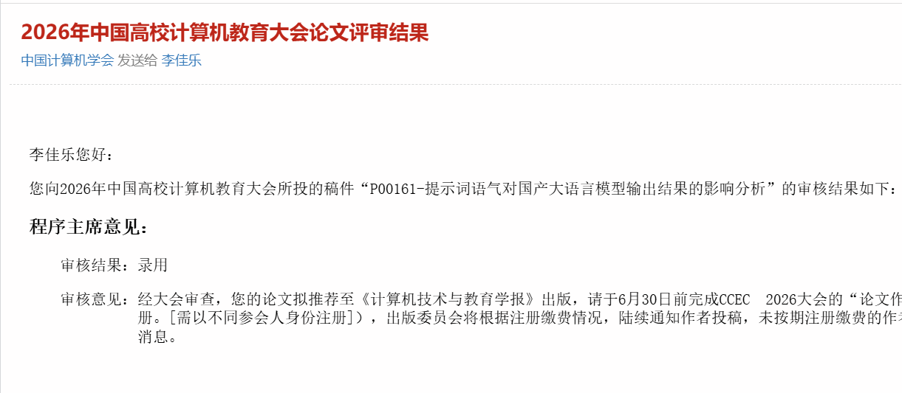
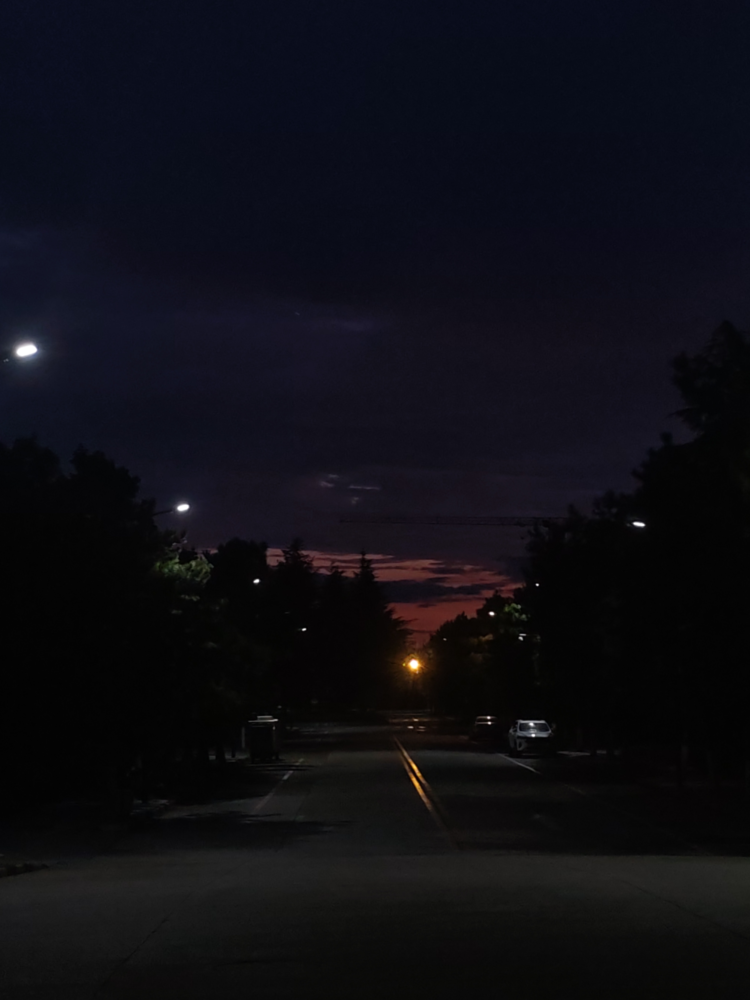
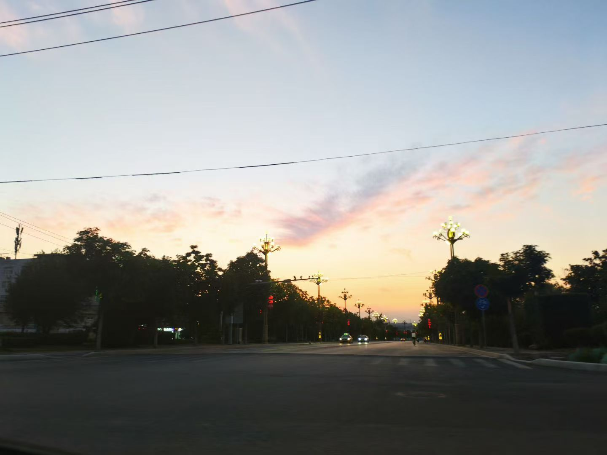
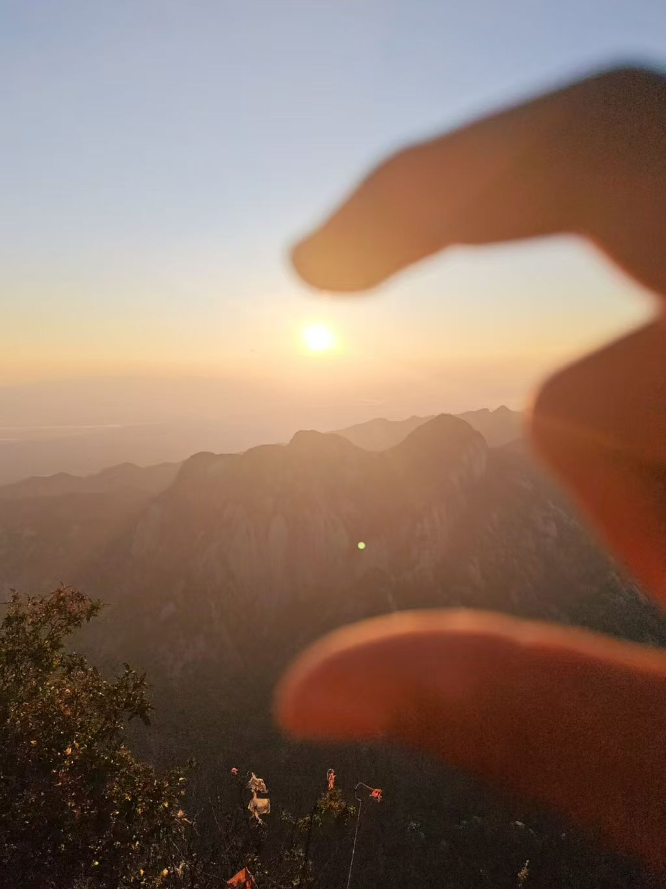
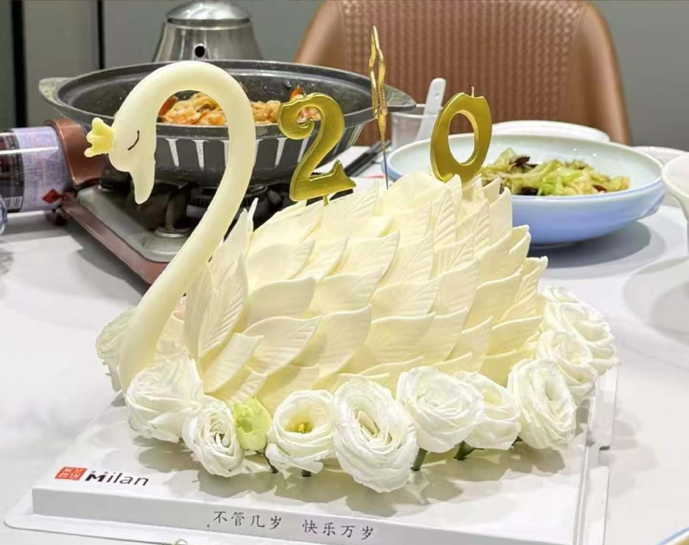

憧憬着，为憧憬做些努力！



Life fragments
04我难忘的生活、感悟、碎碎念。
Personal tags









最开心的事就是好好地生活，生活真的太有意思了。
当我决定哪些内容应该留下时，我也在决定自己真正关心什么。
不是只把它写在页面上，而是完成一次想做的尝试、记住一次开心的出发，也照顾好普通的一天。
成果不一定很大。一次清楚的复盘、一个终于能用的页面，也可以成为成长的证据。
How to update